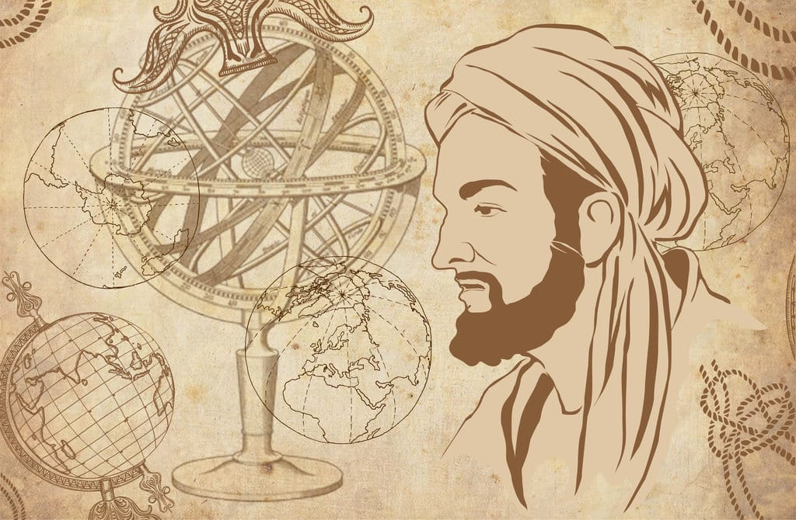

Contoh Tokoh
- Al-Idrisi (Arab): kartografi abad pertengahan, peta dunia Tabula Rogeriana.
- Zhang Heng (Tiongkok): pionir pengamatan geofisika dan seismoskop awal.
- Turgut Ozguc (Turkiye): studi geografi ekonomi dan keruangan industri.
- Ong Hok Ham / ahli lokal: kontribusi pada geografi sejarah Indonesia.

Al-Idrisi: inovasi pemetaan dunia yang memengaruhi kartografi lintas benua.

Zhang Heng: pengukuran fenomena geofisika dan instrumen seismoskop awal.
Ong Hok Ham: perspektif sejarah ruang yang memperkaya analisis geografi Indonesia.
Dampak pada Pembelajaran
Karya-karya mereka memperkaya metode pemetaan, analisis spasial, dan pemahaman dinamika wilayah di Asia.